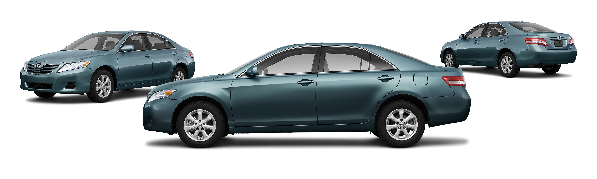

Lab 6 - Arrays and object

change Photo Size
Challenge
The challenge was remember the javascrit's format.
Problems
Not yet problems in this lab.
Results
I feel it was a little bit hard if write more information, but this lab i think my was doing well.